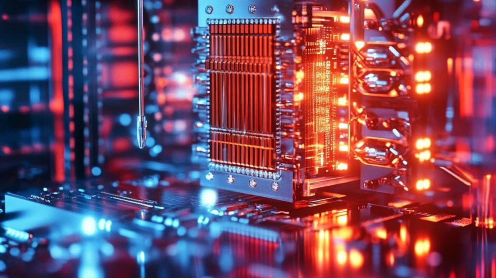

QUANTUM 2025, une année charnière pour l’informatique quantique
Date de publication : 6 février 2025
Auteur : Jean Dupont
En janvier 2025, l'informatique quantique a connu une volatilité importante, avec une baisse des actions des sociétés spécialisées telles qu'IonQ et Rigetti Computing, après les déclarations sceptiques de Jensen Huang, CEO de Nvidia. Selon lui, des ordinateurs quantiques véritablement utiles ne seraient pas attendus avant une vingtaine d'années. Cependant, des progrès notables continuent, avec notamment la présentation de la puce Willow de Google, qui améliore la correction des erreurs en répartissant les qubits logiques sur plusieurs qubits physiques.
Cette incertitude sur l'horizon temporel des investissements dans le quantique se reflète également dans le développement de différentes technologies concurrentes, telles que les circuits supraconducteurs, les ions piégés et l'optique quantique. Chaque approche présente des avantages et des défis, notamment en ce qui concerne l'augmentation du nombre de qubits tout en maintenant leur fiabilité.
Malgré cela, les investissements dans l'informatique quantique continuent de croître, bien que le retour sur investissement reste incertain, avec des entreprises comme IBM et Google poursuivant leurs efforts de développement.